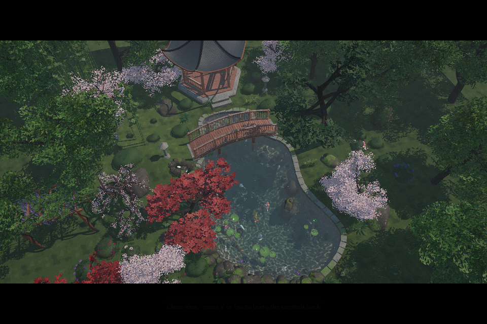
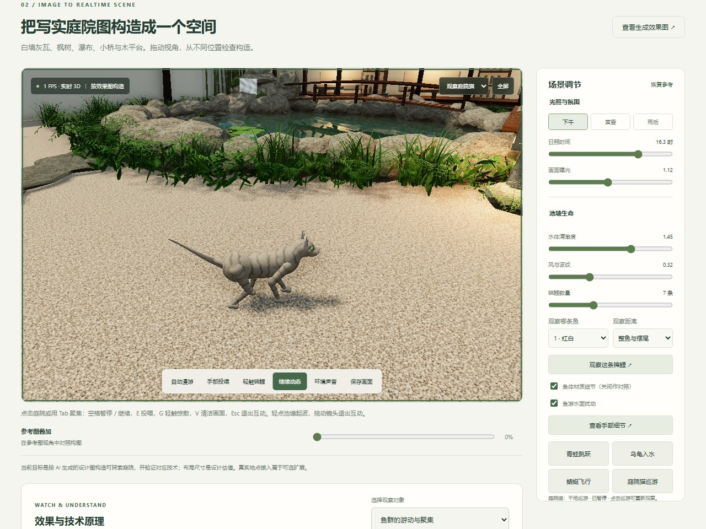

一张图看懂 Koi Scene Lab
把庭院效果做成可探索、可互动、可调参、可解释的 Web 3D 空间，
并为接入真实场景模型建立入口。
完成范围有证据可查。
照片级外观、真实场地精度
与硬件性能仍需独立验收。



插图来自实际运行截图，按版式裁切；原作是独立体验页。当前庭院按 AI 设计图拆解建模，尺寸为设计估值。
已实现的效果，背后怎样计算
效果 → 技术 → 可观察、可调节的结果可探索、可修改的庭院空间
多视角与漫游；调整池塘、平台、建筑比例；参考图叠加、参数 JSON、画布 PNG 导出。
生成颜色贴图、PBR 材质、实例化植被与静态合批；Three.js 场景图管理独立空间对象。
会响应的水面与共享波场
点击涟漪、摆尾扰动、风浪、倒影与折射；睡莲、浮料和停驻动物随水起伏。
双缓冲、四组 Gerstner 波、坐标逆解与解析法线；Fresnel 反射、Beer–Lambert 吸光、GGX 高光。
自主鱼群与完整锦鲤动作
保持间距、对齐聚集、预测避岸、推进滑行；七种花纹，嘴腔、口须、七片鳍与摆尾。
岸线距离与梯度引导避让；GPU 行进波叠加转弯曲率，形变导数修正法线，使反光跟随身体。
完整投喂过程与可核对反馈
捏持六粒 → 松指 → 重力落水 → 漂浮 → 鱼嘴吸入；分开显示释放、落水、吞食与过期。
状态机串联动作；颗粒从实际手部位置转移，嘴口距离决定吞食；同一波场驱动浮料，事件账本计数。
手靠近时，鱼先警觉再惊散
附近鱼转身、加速、略微下潜并散开，随后恢复；手短暂靠近后收回；暂停冻结反应。
每条鱼获得向外的避让方向；转速、加速度与游速有界，4.5 模拟秒内恢复，继续遵守避岸与深度约束。
青蛙、乌龟、蜻蜓与庭院猫
青蛙跳跃；乌龟入水返回；三只蜻蜓飞停；猫起身巡游停坐，腿、躯干与尾巴连续变化。
距离场提取动物曲面，水上接触共享波面；猫两段腿部 IK、九骨骼尾巴、弧长步态、肩部支点坐姿与噪声虎斑。
材质、光照、声音与观察镜头
下午 / 黄昏 / 雨后氛围，鳞片和湿润反光；流水与动作音效；桌面、手机可观察完整主体。
屏幕导数过滤远处细纹，Web Audio 合成声音；包围球结合视野取景，镜头采用按时间的指数平滑。
解释原理，并用实验验证变化
9 类原理说明、演示路线与实时指标；规则 / 权重开关，方向向量、碰撞球、波面调试和 A/B 轨迹。
1/60 秒固定步长、姿态与波场插值；实际采样轨迹和终点差，帮助区分视觉印象与计算结果。
导入真实模型，叠加动态水域
单文件 GLB；两点已知长度校准；标记水域、水位、水深、障碍与投喂点；JSON 保存与复用。
统一比例 s = 真实长度 / 模型两点距离；模型指纹、几何校验与岸线约束，让水和鱼使用同一空间尺度。
支撑这些效果的工程能力
固定步长与显示插值 · 静止倒影 / 折射复用及输入失效刷新 · 模型资源去重释放 · WebGL 上下文恢复 · 点击 / 拖动分流 · 键盘焦点 · 手机触控布局。
技术栈：Three.js 0.160.0 / WebGL / GLSL / JavaScript ES Modules / Web Audio / esbuild 0.25.10。运行资源本地化，版本和许可有记录。
从当前示范，走向真实场景
黄色：需要新增数据或流程 绿色：当前已有接入能力
当前自动检查通过
v20 完整自动回归；
核对对应源码与构建指纹。
v20 猫原生流程通过
桌面 / 手机取景、暂停、
原生巡游与运行错误检查。
v20 原始验收实图
停坐、手机、步行图已审阅；
其他原生流程保留各轮证据。
截至本次汇总：未提交、推送或归档。
投喂、惊散、GLB、受控上下文恢复有历史原生证据；本轮 6 项仅覆盖猫的收尾。
理解当前能力，也要知道完成范围
场景来源与精度
AI 生成设计图和贴图，代码构造三维场景。当前不是实际地点测绘，也未自动把照片重建成 3D；运行时不调用语言模型。
物理与生物近似
二维波场、程序光斑与规则行为；未求解完整流体或鱼水耦合。惊散不预测所有真实锦鲤；猫走固定干地路线，弯道接触近似。
视觉与功能差距
照片级外观未达成验收；没有毛发和全身动力学。独立庭院没有原作全部季节、潜水镜头、18 种锦鲤品种花纹与完整声音；雨后无雨粒子。
模型与验收边界
GLB 需内嵌资源；Draco / Meshopt / KTX2 压缩、自动重建与 NeRF / Splatting 未接入。真实硬件性能、GPU 内存、完整读屏及原生 JSON 文件回读仍需补验。